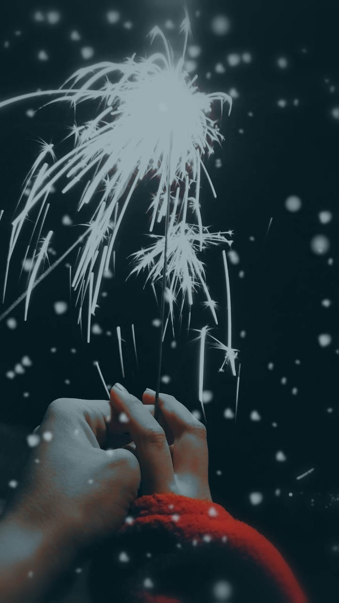
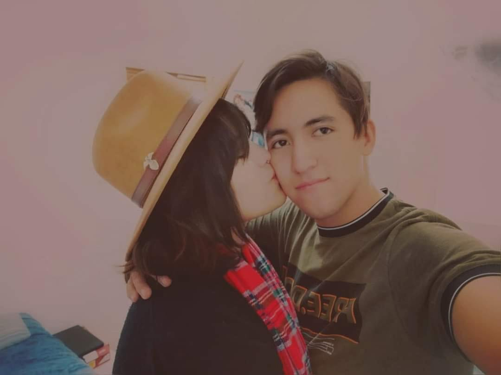
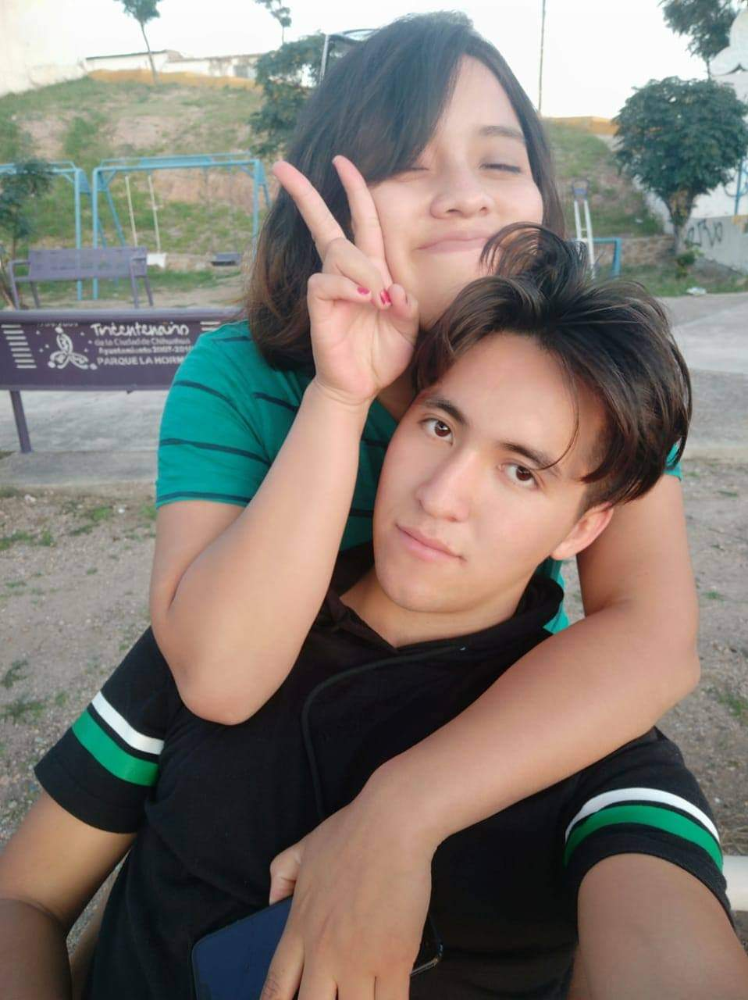
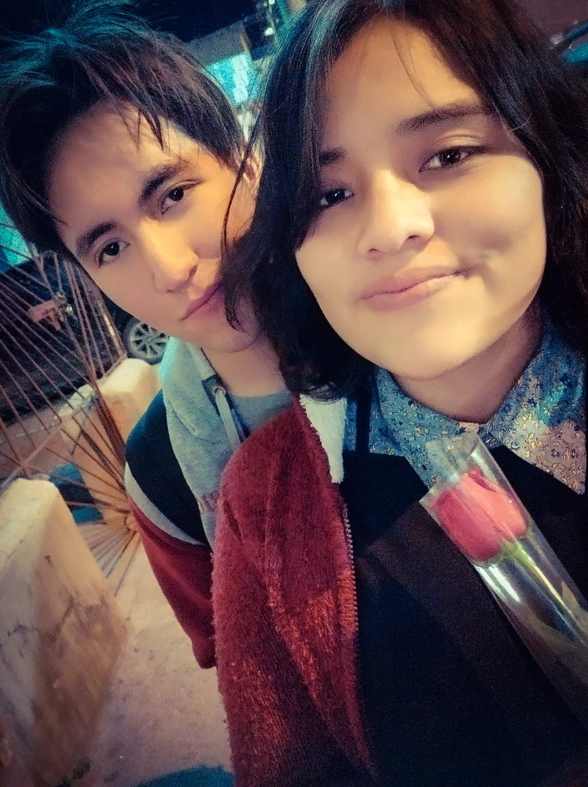

¿Mirando la Luna?
Mirando la luna
Volví a verte en mi imaginación
Como si el pincel de mi mente
Te retratara entre mis sueños
Mirando la luna
Volví a escribir tu nombre
Volví a soñar con tu presencia
Y sonreí al ver tu carita
Y una lágrima corrió por mi mejilla
Anhelando abrazarte.
Mirando la luna
Le dije en voz baja:
En tu noche ilumina el camino de mi amada
Con la luz que desprende mi amor por ella
Y un suspiro de mi pecho
Brotó en el silencio de la noche
Y con él las letras de tu nombre,
Le sonreí a las estrellas
En donde quiera que estés
Mi pequeña Gee
Siempre estare pensando en ti
Siempre amándote.
Nuestro tiempo

“Estás perdiendo el tiempo conmigo, un dia te vas a hartar de mi y te
iras”
Siempre solías decir eso, yo nunca quise tomarlo en serio, nuestro tiempo juntos ha sido el más
feliz que he tenido, ciertamente estuvo lleno de risa y llanto para los dos.
Si piensas que lo nuestro fue tiempo perdido, quisiera que recuerdes todas las cosas lindas que
pasamos juntos, porque conocerte y estar contigo fue lo mas bueno que he tenido.
Si pudiera volver atrás, a un momento, a un solo momento, elegiría aquella noche que pasamos ante
las luces de la ciudad, cuando no nos importaba nada más, aquella noche en la que charlamos con
nuestras almas desnudas, aquella vista era hermosa, tus cabellos ondeando en la oscuridad de la
noche con el brillo de tus ojos mientras decias que me amabas.
Recuerdos
Algunas fotos que logre rescatar.

¿Recuerdas todo lo que hicimos esa noche?, se hizo tarde, le pedimos a cierto desagradable sujeto
que nos llevara a tu casa (ya tu sabrás quien :3 ), Tu madre nos llamo para pedirte que
lleváramos panes, revisando todas las tiendas.
Cuando encendimos las bengalas y casi quemamos el cerro de tu casa :3
¿Alguna vez has visto unos ojitos más lindos que esos?, seguramente al verte al espejo.
“La amasion”
Autora: Angelica, mi pequeña Gee.
La segunda fotos que nos tomamos juntos, siempre la pasábamos tan bien que se nos
olvidaba tomar la foto.
Fotogénicos como siempre xD
Los colores llamativos siempre fueron lo tuyo, denotaban tu aura, mi
pequeña flor dentro de un jardín contaminado y lleno de penas.

Ahhh, ese sombrero...

Me gustaba ese parquesito, en donde lloramos juntos aquella noche

Maldita sea TE AMO!
Era feliz a tu lado…
olvido...

Se que quiza ya me has olvidado, que las noches ahora son más tranquilas
sin la preocupación de
pensar en mi, dijiste que yo te olvidaría en un par de semanas, que si no estuvieras todo estaría
mejor para mi.
Si, bueno, quizá te equivocaste en eso; ahora las noches son frías, no puedo evitar que al tratar de
dormir, observo el cielo por la ventana, mientras veo las estrellas vienen a mi todas esas palabras
que dijimos,todas esas promesas que no cumplimos se manifiestan como una amalgama de tristeza, tu ya
no estás y eso es algo con lo que aun no logro vivir.
Tendré que vivir con cada recuerdo de tu amor al estar en cualquier lado, nuestras aventuras
alrededor de la ciudad siempre están ahí pasar por lugares que solíamos visitar juntos.